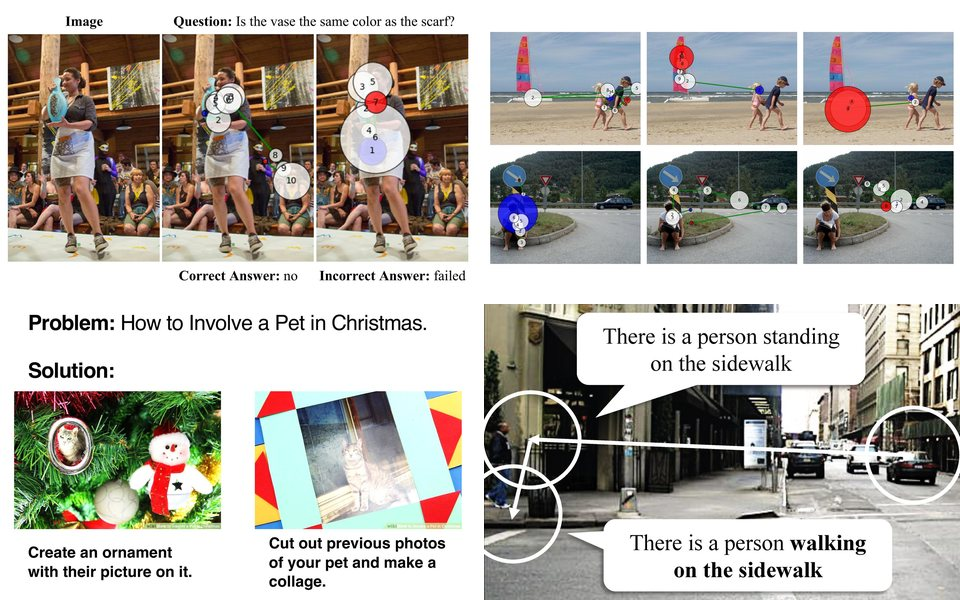

Ph.D. dissertation · University of Minnesota · 2025
Building Human-Like Machine Intelligence: Advancing Attention by Modeling, Alignment, and Explainability
2026 Distinguished Dissertation Award · University of Minnesota
One of two recipients university-wide · University nominee for the CGS/ProQuest Distinguished Dissertation Award
Summary
AI systems can describe images and answer questions about them, yet they still struggle to reason step by step through real-world problems and to justify their answers. This dissertation uses human visual attention (where people look, and in what order) as a bridge between perception and reasoning, in three parts: Modeling, Alignment and Explainability.

Contents
Chapters 2–6 appeared as the papers below.
-
I. Modeling
Predict how people move their eyes during a task, and how each person differs.
-
II. Alignment
Align machine attention with human attention, improving step-by-step problem solving.
-
III. Explainability
Predict where people look and explain in plain language what each fixation looks at.
Cite
@phdthesis{chen2025building,
title = {Building Human-Like Machine Intelligence: Advancing Attention by Modeling, Alignment, and Explainability},
author = {Chen, Xianyu},
school = {University of Minnesota},
year = {2025},
month = nov,
url = {https://hdl.handle.net/11299/279218}
}